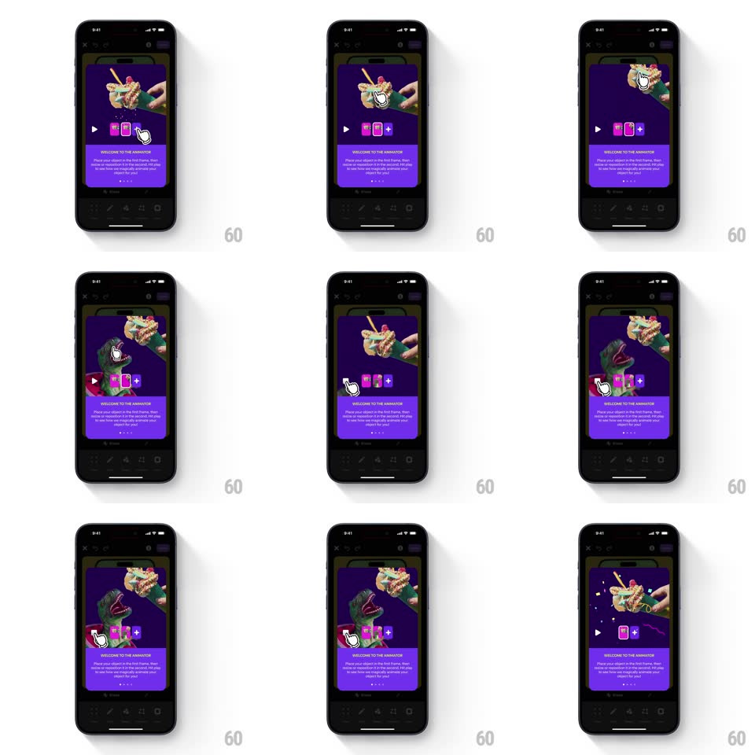

Media
Frame-by-frame

Rebuild this interaction 1:1: Shuffles' welcome-to-the-animator tooltip - the purple card ("WELCOME TO THE ANIMATOR") loops a demo of frame-by-frame animation: objects get placed in frame one, repositioned in frame two, and the play button runs the in-betweened result with a sparkle.

Rebuild this interaction 1:1: Shuffles' welcome-to-the-animator tooltip - the purple card ("WELCOME TO THE ANIMATOR") loops a demo of frame-by-frame animation: objects get placed in frame one, repositioned in frame two, and the play button runs the in-betweened result with a sparkle.
## Integration
Integration: stack-agnostic spec - springs given as stiffness/damping, timed motions as duration + curve; map every value to your framework and animation library of choice.
## Scene
The dark animator canvas (toy dinosaur collage) behind the purple card: caption "WELCOME TO THE ANIMATOR", body "Place your object in the first frame, then move or reposition in the second, and the app will magically animate your object for you!", page dots, Done below. The demo area holds a play triangle, the frame thumbnails with a "+" button, and the canvas above.
## Motion spec
Pattern: looping build-and-play demo.
- Beat 1: the canvas shows frame 1 - the dinosaurs in their start poses; the first frame thumbnail fills in (fade, 250ms).
- Beat 2: the second thumbnail gets added (scale 0.6 -> 1, spring, 250ms) and on the canvas the dinos glide to new positions (600ms, ease-in-out) - the "reposition" step, shown as the actual move.
- Beat 3: the play triangle pulses (scale 1 -> 1.15 -> 1) and the canvas plays the tweened animation - the dinos animate smoothly between the two poses (800ms) with a sparkle burst (small star particles, 500ms) on completion.
- Hold the result 800ms, then reset to empty frames and loop.
## Calibration
- The magic beat is the playback - the in-betweens must be smooth interpolation, not a cut.
- Sparkles mark "animation done" - they are the only particles in the loop.
## Reduced motion
Static frame showing both thumbnails filled and the played result.
## Don't miss
- The thumbnails mirror the canvas poses exactly - frame 1 and frame 2 are snapshots, not icons.
- The "+" button stays visible after both frames exist - adding more frames is the always-on affordance.